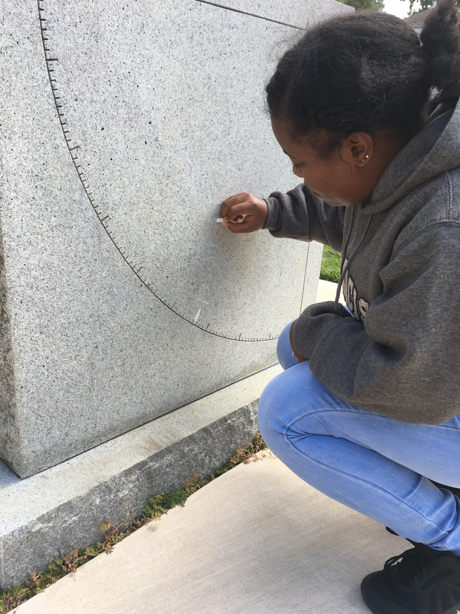

It was great to show the plinth to the half-dozen or so that stayed at the end of class today.
Earsy Crockett and I came back again at "high noon" which was at 1:04pm, and chalked in the angle of the sun — which was 56.5 degrees as you can see in this picture:
"High noon" is by definition the time of day that the sun is highest in the sky. It is also due south at that time.
The angle we mark at high noon is going to get a little smaller each day until the winter solstice.
Just one week ago (on September 6th at 1:06pm), the angle at high noon was 59 degrees.
I'll send out a reminder before we mark the plinth again on Tuesday, September 20th in case other people want to join us and see what the plinth does.
This year the fall equinox is on Thursday, September 22nd. Maybe we should go out at high noon on the 22nd as well and see what — if anything — is special.